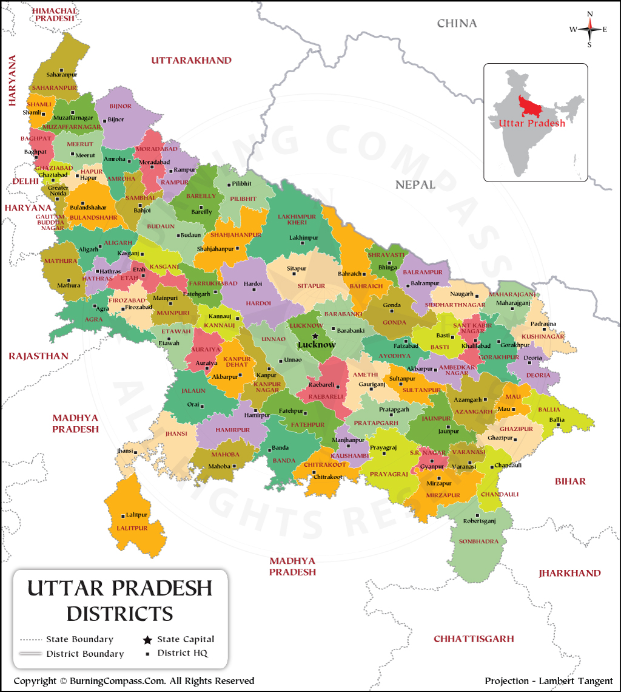

<!---Image and Image Maps-->

<body bgcolor="LightCyan">
<center>
    <h1><u>CLICK ON ANY AREA TO KNOW THE LANGUAGE</u></h1>
    
    <map name="districtmap">
        <area alt="Bhojpuri" title="Bhojpuri" href="https://en.wikipedia.org/wiki/Bhojpuri_language" coords="739,462 887,491 973,701 826,
        832 789,830 704,859 668,833 " shape="polygon">
        <area alt="Bagheli" title="Bagheli" href="https://en.wikipedia.org/wiki/Bagheli_language" coords="789,897,64" shape="circle">
        <area alt="Bagheli" title="Bagheli" href="https://en.wikipedia.org/wiki/Bagheli_language" coords="495,778,76" shape="circle">
        <area alt="Awadhi" title="Awadhi" href="https://en.wikipedia.org/wiki/Awadhi_language" coords="482,317,692,711" shape="rect">
        <area alt="Awadhi" title="Awadhi" href="https://en.wikipedia.org/wiki/Awadhi_language" coords="621,764,68" shape="circle">    
        <area alt="Kannauj" title="Kannauj" href="https://en.wikipedia.org/wiki/Kannauji_language" coords="362,15,428,158" shape="rect">
        <area alt="Kannauj" title="Kannauj" href="https://en.wikipedia.org/wiki/Kannauji_language" coords="341,359,436,556" shape="rect">
        <area alt="Kannauj" title="Kannauj" href="https://en.wikipedia.org/wiki/Kannauji_language" coords="388,600,66" shape="circle">
        <area alt="Bundeli" title="Bundeli" href="https://en.wikipedia.org/wiki/Bundeli_language" coords="173,685,428,920" shape="rect">
        <area alt="Braj" title="Braj" href="https://en.wikipedia.org/wiki/Bundeli_language" coords="324,330,46" shape="circle">
        <area alt="Braj" title="Braj" href="https://en.wikipedia.org/wiki/Bundeli_language" coords="233,353,47" shape="circle">
        <area alt="Braj" title="Braj" href="https://en.wikipedia.org/wiki/Bundeli_language" coords="136,348,50" shape="circle">
        <area alt="Braj" title="Braj" href="https://en.wikipedia.org/wiki/Bundeli_language" coords="286,388,44" shape="circle">
        <area alt="Braj" title="Braj" href="https://en.wikipedia.org/wiki/Bundeli_language" coords="80,391,292,534" shape="rect">
        <area alt="Kauravi" title="Kauravi" href="https://en.wikipedia.org/wiki/Kauravi_language" coords="268,272,49" shape="circle">
        <area alt="Kauravi" title="Kauravi" href="https://en.wikipedia.org/wiki/Kauravi_language" coords="146,185,123" shape="circle">
    </map>
    </center>
</body>


